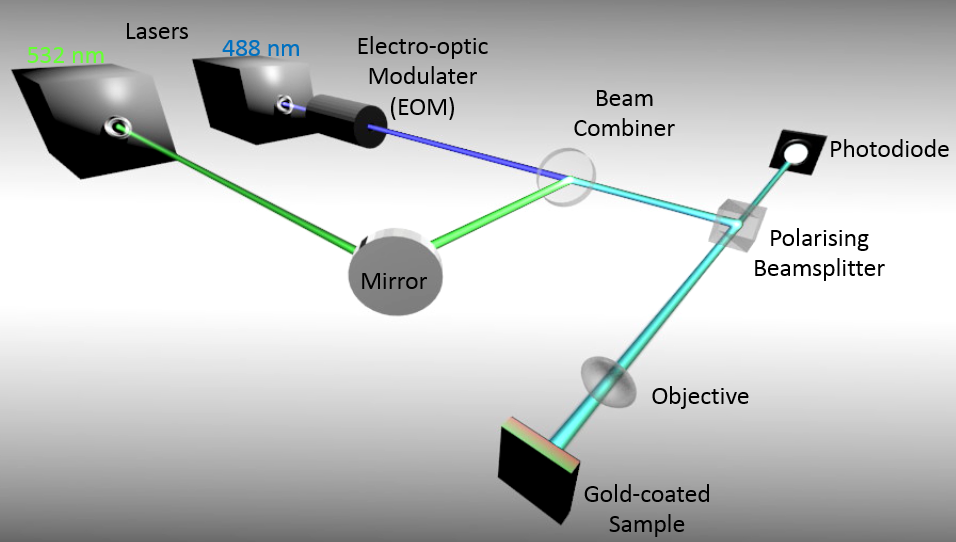
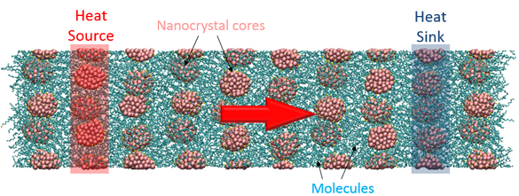
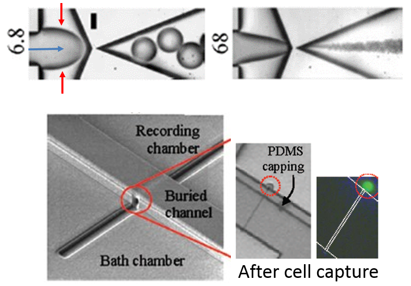

Research
Our work focuses on understanding energy transport and conversion processes at the nanometer scale in many different systems. All electronic devices get hot during operation. This waste heat reduces performances and overheats devices, requiring good engineering solutions to alleviate this problem. A comprehensive understanding of energy transport and conversion at the nanoscale will allow us to achieve this goal. Discovery of new energy conversion processes can also spur new inventions for more efficient energy generation. My team uses lasers to experimentally study these processes. At the same time, we also complement these experiments by building computational models using high-performance computing tools through in-house and collaborative efforts.
Frequency domain thermoreflectance setup
Frequency domain thermoreflectance (FDTR) technique is a high-fidelity, high-throughput optical method suitable for screening thermal conductivity of many novel single crystals and thin films across a wide temperature range. As most novel materials are usually discovered or created as micron-sized crystals or nanometer thick thin films with low yields, the FDTR technique avoids the need of attaching or fabricating cumbersome and complex detectors and sources that may damage these delicate materials. This advantage provides a short screening time for chemists and material scientists to select and concentrate their efforts on more promising candidates. I have used this technique to measured many micron-sized organic and hybrid crystals as well as complex thin film superlattices.|  |
|
Schematic of a FDTR setup |
|  |
Simulations can directly provide a picture of what is actually happening at the micro- and nano-scale.
Molecular dynamics is a classical technique used in many diverse fields to provide an atomistic picture of many different processes.
My team has used this technique to understand how energy moves in novel complicated materials that are used for making LEDs, solar cells, and thermoelectrics.
When an accurate description of the atomic and sub-atomic interactions in a material is needed, first principles calculations are employed. This technique solves complex mathematical representations of the electrons in a material to accurately predict properties of a material. |
|
Molecular dynamics simulation of heat flow in a nanocrystal array |
Bio-related
|  |
Microfluidics is widely used to speed up and improve the efficiency of biological tests and detections. I have previously created several microfluidic devices for various biodetection applications. I am currently interested in combining my energy-related research into biology.
|
|
Microfluidics (monodispersed microdroplets generation) |